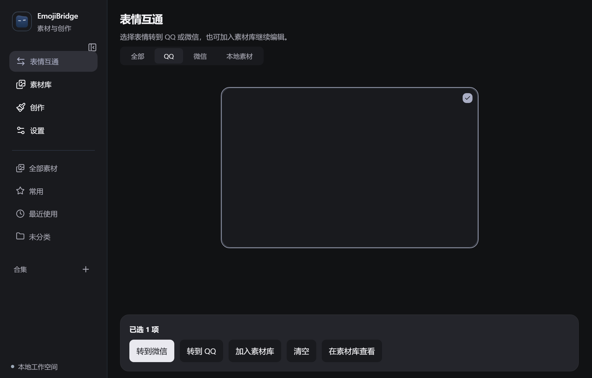

不必留在原地。
把 QQ 和微信里的表情接起来。
收集、创作，再带去你想聊天的地方。

选中喜欢的表情，让它去微信。
Windows 桌面工具 · 支持双向与批量转移QQ / 微信需在本机登录并保持可操作
不止会搬。
还很会玩。
名场面剪成 GIF，漫画加一句神回复。
再给它一点弹性、一点个性。
想表达的，自己动手就有。
漫画留白，刚好放下你的神回复。
横排、竖排、描边，把那句话写进画面。
挤压、回弹，文字也一起动起来。
从一帧到一段裁剪画面、截取视频、导出 GIF
从静态到动态Q 弹、旋转、掉落物与传送动效
从灵感到同款套用模板，复用自己的排版
做好了。
顺手，拖出去。
刚做好的梗，不必再到文件夹里翻。
从成品拖出区，直接带到聊天窗口或文件夹。
创作到使用，少几次来回。
一张成品，一次拖出。
这里可体验拖动示意。桌面软件会拖出成品文件；能否接收，取决于目标软件。自动加入 QQ / 微信收藏，可使用互通功能。
逛到哪，
带到哪。
随手素材，浮在你正在看的网页上。
喜欢的收进来，想用的拖出去。
做好的表情，也能再送去 QQ 和微信。
独立置顶窗口与屏幕贴图；不改变网页内容。
连等待，
都有一点意思。
熟悉的像素，放进每天都会用到的细节。
经验收进瓶子，表情交给末影人。
好用之外，也想让你会心一笑。
动效载入中…
把等待，收进一只经验瓶。
处理时，经验球汇入经验条；完成后，瓶子倾身接住，再轻轻离场。结果已经可用，不必等动画播完。
经验等级记录处理耗时，
不表示任务完成百分比。
留住灵感。接住快乐。
下一张表情，
让它属于你。
S0174 · Windows x64
先轻装开始，需要时再添加。
轻量版自带默认自动抠图、视频转 GIF 与基础编辑。动漫、精细抠图、字幕和模板扩展，可在设置中下载并导入。
升级用户：S0169—S0173 修复已整合。解压到新目录启动，无需叠加旧补丁；保留原素材与旧目录。
- 转入微信：会使用你本人的文件传输助手发送素材并添加表情，占用文件传输助手的聊天上下文，产生相应消息记录。
- 读取 QQ 表情或执行互通时：请暂时不要移动鼠标、点击或切换窗口，等待任务完成后再操作。
如果 EmojiBridge 帮你把好梗带到了想去的地方，
欢迎在 GitHub 点个 Star，支持 Neo 继续打磨。
需要用命令行启动吗？+
不需要。完整解压便携包后，双击 EmojiBridge.exe。请保留同目录的运行文件，不要只移动一个 EXE，也不要在压缩包预览中启动。
宣传片的素材可以直接用吗？+
同款素材作为独立下载提供。先解压 ZIP，再多选图片与 GIF 拖进素材库；无需一次只导入一张。模板扩展可在轻量版设置中选装，完整版已自带；宣传片素材为独立可选下载。